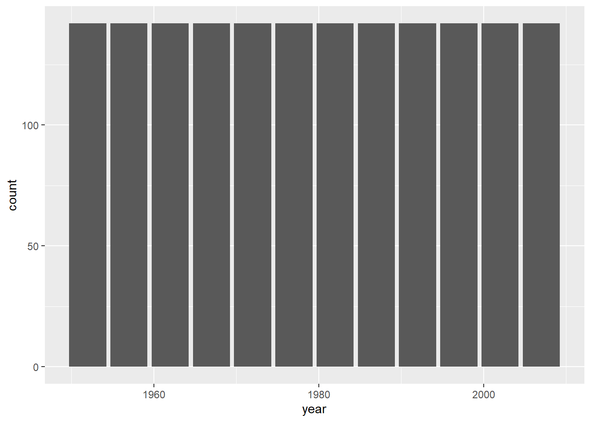
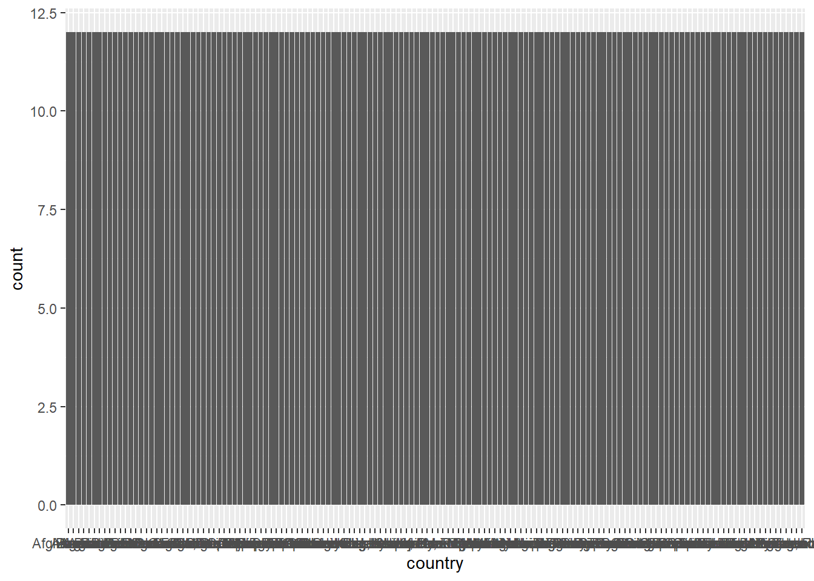
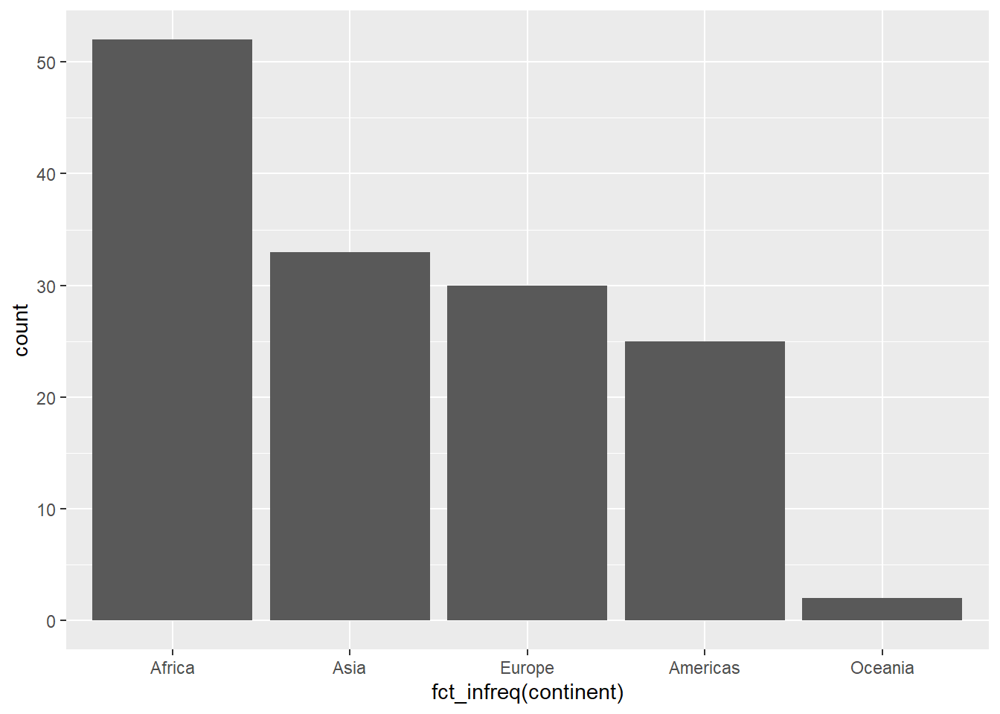
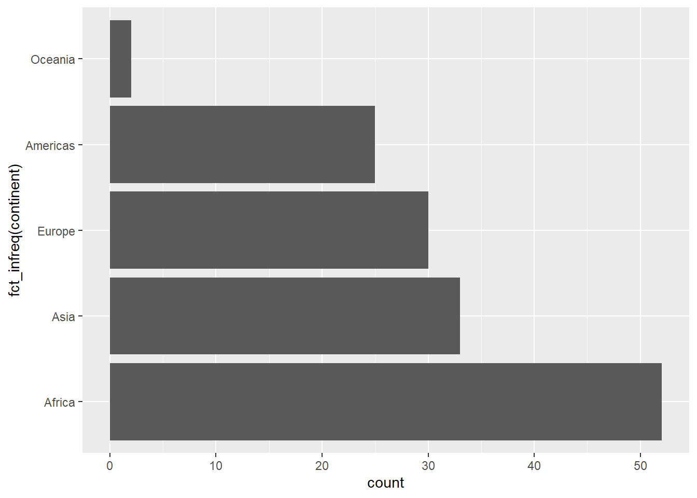
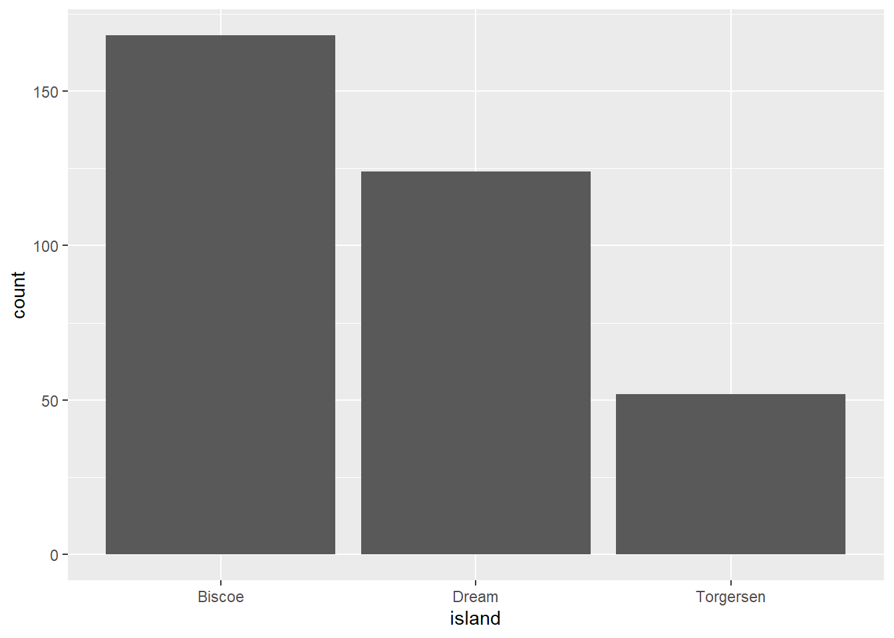

library(datasets)
library(tidyverse)
#install.packages("gapminder")
library(gapminder)2 Visualizing Amounts
In this section, we’ll explore how to use bar plots in order to illustrate how we can apply the Grammar of Graphics to amounts data through ggplot2.
Mapping to geom_bar
In addition to loading the necessary packages, let’s get a new dataset. We can access the data from the Gapminder plot as a package in R:
Removing the # at the front will allow you to install this package (I have it here because I already have it installed). This will add the dataset as a tibble called gapminder:
gapminder# A tibble: 1,704 × 6
country continent year lifeExp pop gdpPercap
<fct> <fct> <int> <dbl> <int> <dbl>
1 Afghanistan Asia 1952 28.8 8425333 779.
2 Afghanistan Asia 1957 30.3 9240934 821.
3 Afghanistan Asia 1962 32.0 10267083 853.
4 Afghanistan Asia 1967 34.0 11537966 836.
5 Afghanistan Asia 1972 36.1 13079460 740.
6 Afghanistan Asia 1977 38.4 14880372 786.
7 Afghanistan Asia 1982 39.9 12881816 978.
8 Afghanistan Asia 1987 40.8 13867957 852.
9 Afghanistan Asia 1992 41.7 16317921 649.
10 Afghanistan Asia 1997 41.8 22227415 635.
# ℹ 1,694 more rowsWe have a few different variables to work with in this dataset, including:
Country
Continent
Year of recording
Life expectancy (in years)
Population
Per capita Gross Domestic Product (in USD)
Let’s use some of this to make a bar plot. First, we can try using the year of recording as a categorical variable:
ggplot(data=gapminder,mapping=aes(x=year)) +
geom_bar()
Hmmm… all of the bars are exactly the same. This is because the function is counting the number of instances of each year in the dataset. Since the same number of countries are recorded for each year, for each year this will just be the number of countries (142). What if we used country?
ggplot(data=gapminder,mapping=aes(x=country)) +
geom_bar()
Ack! Not only is this uninformative (countries are recorded over the same 12 years), but there’s too many countries to plot on the x-axis. Let’s try again but with continents:
ggplot(data=gapminder,mapping=aes(x=continent)) +
geom_bar()
This makes a bit more sense. We can see there are more instances of “Africa” than, say, “Americas”, which makes sense: there are more countries in the former. However, if we look at the left, the counts are a pretty high estimate for number of countries. This is because for each continent, it is counting each country for each year (12) in the dataset.
Let’s say we just wanted to look at the data from the most recent year in the dataset. First, we need to figure out what that year was. We can use the max function to get this information:
max(gapminder$year)[1] 2007This function just takes a vector and gives the maximum value. So the most recent data here is from 2007. If we just want the data from that year, we can use the square brackets ([]) to subset the data to just the rows from 2007. We’ll create a new variable called gm2007:
gm2007<-gapminder[gapminder$year==2007,]Remember that inside the square brackets, what comes left of the comma refers to rows, and what comes right refers to columns. So this code is effectively saying “give me all the rows in the gapminder tibble where the value in the year column is equal to 2007.” We’ve assigned it to a new object called gm2007. Now, when we look:
gm2007# A tibble: 142 × 6
country continent year lifeExp pop gdpPercap
<fct> <fct> <int> <dbl> <int> <dbl>
1 Afghanistan Asia 2007 43.8 31889923 975.
2 Albania Europe 2007 76.4 3600523 5937.
3 Algeria Africa 2007 72.3 33333216 6223.
4 Angola Africa 2007 42.7 12420476 4797.
5 Argentina Americas 2007 75.3 40301927 12779.
6 Australia Oceania 2007 81.2 20434176 34435.
7 Austria Europe 2007 79.8 8199783 36126.
8 Bahrain Asia 2007 75.6 708573 29796.
9 Bangladesh Asia 2007 64.1 150448339 1391.
10 Belgium Europe 2007 79.4 10392226 33693.
# ℹ 132 more rowsGreat, now we just have one year’s worth of data. When we make a bar plot:
ggplot(data=gm2007,mapping=aes(x=continent)) +
geom_bar()
This looks a lot more reasonable. Now each bar is reflecting the number of countries in each continental grouping.
Try it yourself!
You can look at all the years in this dataset using the unique function. It works like this
unique(gapminder$year)
Choose another year from this data, create a subset, and then make a barplot of the number of countries by continent.
Reordering the categories
Right now our plot is presenting these groupings from left to right in alphabetical order. We might instead want to order them based on their position in the data. To do this, we need to let R know that the continent category isn’t just a , but a factor (an ordered set of categories). We won’t dive into this too deeply here, but we can apply the fct_infreq function to the continent vector to order them based on their frequency in the data:
ggplot(data=gm2007,mapping=aes(x=fct_infreq(continent))) +
geom_bar()
Reorienting bar graphs
Oftentimes, our categorical labels at the bottom will overlap. We saw an extreme case of this when we tried to plot bars by country. If you have a milder case of this, it can often be advantageous to plot horizontally rather than vertically. We can do this by adding another layer with a function, coord_flip, related to the coordinate space:
ggplot(data=gm2007,mapping=aes(x=fct_infreq(continent))) +
geom_bar() +
coord_flip() 
Like the geometry, this coordinate layer is added using the + operator.
Adding a mapping: bars on bars
Let’s say we wanted to represent more than a single variable in these data. We can take a look at this with a new dataset:
#install.packages("palmerpenguins")
library("palmerpenguins")This is data recorded on different penguin populations from three Antarctic islands. Let’s look:
penguins# A tibble: 344 × 8
species island bill_length_mm bill_depth_mm flipper_length_mm body_mass_g
<fct> <fct> <dbl> <dbl> <int> <int>
1 Adelie Torgersen 39.1 18.7 181 3750
2 Adelie Torgersen 39.5 17.4 186 3800
3 Adelie Torgersen 40.3 18 195 3250
4 Adelie Torgersen NA NA NA NA
5 Adelie Torgersen 36.7 19.3 193 3450
6 Adelie Torgersen 39.3 20.6 190 3650
7 Adelie Torgersen 38.9 17.8 181 3625
8 Adelie Torgersen 39.2 19.6 195 4675
9 Adelie Torgersen 34.1 18.1 193 3475
10 Adelie Torgersen 42 20.2 190 4250
# ℹ 334 more rows
# ℹ 2 more variables: sex <fct>, year <int>So we have some categories (species, island, sex) as well as some numerical data (bill_length, flipper_length, etc.). Let’s look at penguin counts per island:
ggplot(data=penguins,mapping=aes(x=island)) +
geom_bar()
Great. But what if we wanted to see how these break down in terms of species? We can use a stacked bar by telling R to map this on to the aesthetic fill for the bars:
ggplot(data=penguins,mapping=aes(x=island,fill=species)) +
geom_bar()
The fill argument connects to the fill color used in the bars. Now, we’re getting counts of each penguin species for each island, as well as the breakdown by species as determined by color.
We can also map colors on to our gapminder data from 2007:
ggplot(data=gm2007,mapping=aes(x=fct_infreq(continent),fill=continent)) +
geom_bar() +
coord_flip() 
While this illustrates how to add an additional aesthetic mapping, this relates back to our discussion about deliberate design: is this something that would be needed?
Try it yourself!
With the penguin data, try the following:
Plot the counts per island broken down by sex
Plot the counts per species, broken down by island
Plot the counts per island, broken down by year of observation